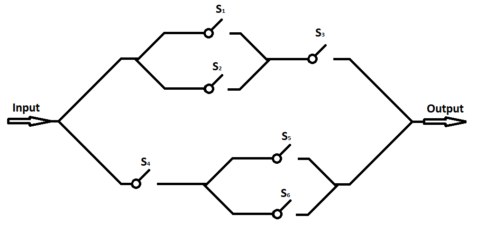

Probability Assigmment
Contents

Probability Assigmment¶
Problem 1a: (10 Points)¶
The heights of adult men in the United States are approximately normally distributed with a mean of 70 inches and a standard deviation of 3 inches. Heights of adult women are approximately normally distributed with a mean of 64.5 inches and a standard deviation of 2.5 inches.
Graph the two distributions from 0 to 100 inches using the plotting framework of your choice ( Matplotlib, Seaborn etc.)
Problem 1b: (10 Points)¶
What is the probability that a female is between the heights of 65 inches and 70 inches? What is the probability that a female is between the heights of 65 inches and 70 inches given that they are at least 60 inches tall ( You can use 100 as the upper limit of the distribution )?
(Hint: This is a probability assignment, not a calculus assignment. You do not need to calculate any integrals, just show the steps that you would take and the final result)
Problem 1c: (20 Points)¶
Lets say you conduct an experiment with a 100 trials where you measure a random man’s height. Lets say the measurement that you take is always rounded down to an integer
( ie. both a person with a height of 75.2 inches and a person of height 75.8 inches would be recorded as 75 inches thus making the distribution a discrete distribution instead of continuous).
What do you expect the count of men with a height of 70 inches to be? What type of distribution do you expect it to be?
( You do not need to answer these questions, it is simply something to think about to aid you with the next part )
Calculate the probability distribution function of the “counts” of people out of 100 with a height of 70 inches.
( Hint: You will have to find the categorical probability that a man is of height 70 )
Simulate the experiment 1000 times to show the relationship on a plot. What is the relationship between number of times the experiment is run and how close it is to the true distribution
( Hint: numpy has many functions that can allow you to simulate distribution functions )
Problem 2a: (15 Points)¶
Given the circuit below, the probability that any switch \(S\) is closed (current passes through ) is \(p\)? What is the probability that there is a signal at the output? Give your answer in terms of \(p\)

Problem 2b: (15 Points)¶
Given the same circuit above, if a signal is observed at the end, what is the probability that \(S_3\) is open ( no current going through ) . Give your answer in terms of \(p\).
Problem 3a (20 points)¶
It follows that those with a larger height will be generally heavier than those with a smaller height. This is just a broad generalization and does not always apply. Here is a link to a data set that contains anonymous entries on peoples’ gender, height and weight. Download this dataset ( It is pretty small don’t worry ). You might need to make a Kaggle account. Kaggle is an online community of data scientists and has a large collection of open source datasets for many different purposes.
Familiarize yourself with the package pandas, as you can use it to easily unpack the csv into manipulatable datatypes. If you are using colab, which you most likely are, ensure that you have logged in with the university Google account.
Using the data find two values for covariance between height and weight. There should be one value for male and female.
(Hint: Make sure to store all intermediate values like averages and counts as they might be useful for the extra credit)
Problem 3b: (10 points)¶
Find the correlation between height and weight for Males and Females
Extra credit: (5 points)¶
Using matplotlib’s or seaborn’s 3D graphing functionality, create a wireframe graph of the multivariate probability distribution of heights and weights for either men or women ( You don’t have to do both ). Use the data and calculated values from problem 3 to solve this problem.
( Hint: You can assume both distributions are normal. Use this link to help in understanding )